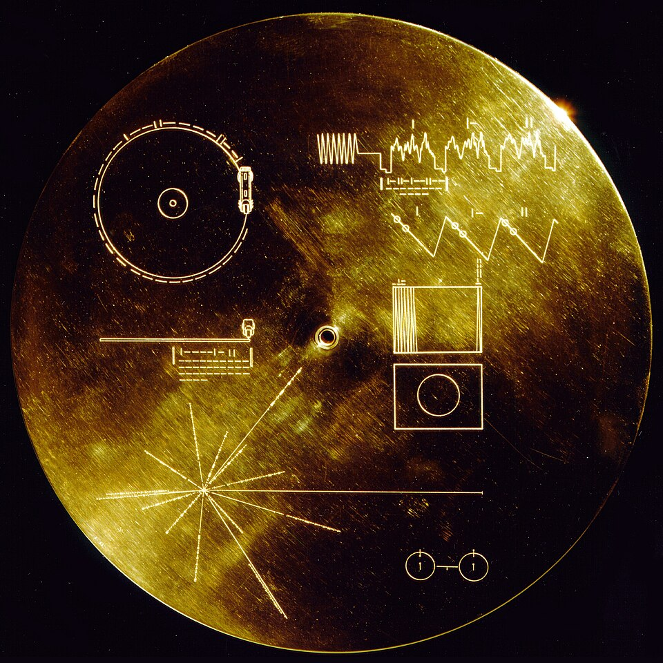
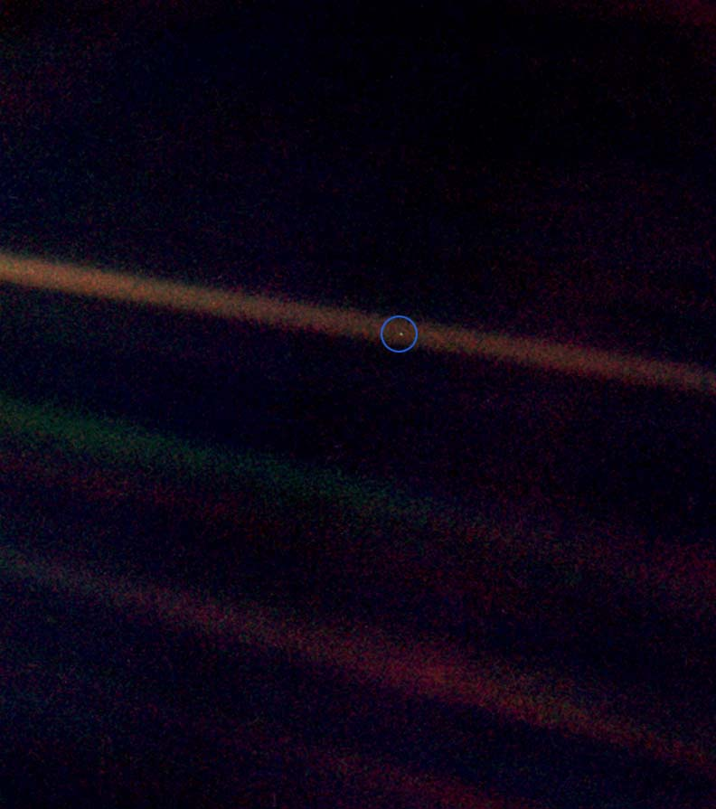

Voyager 1 & 2 · Interstellar Mission
旅行者号现在飞到了哪里
太阳系八颗行星的实时相对位置，以及两艘已经飞出日球层的探测器在星际空间中的坐标。把鼠标移到任意天体上查看它的数据，拖动下方的时间条可以看它们 80 多年里的运动；切到「立体」还能用鼠标把整个太阳系转起来。
本页当前时间 / NOW
--
人类用了将近半个世纪，终于航行到了目之所及的昨天
拖动旋转 · 滚轮缩放 · 双击复位
太阳
行星
旅行者 1 号
旅行者 2 号
日球层顶 · 星际空间边界
俯视：真实黄经与投影位置，径向为压缩比例 · 天体大小为示意
旅行者 1 号
TELEMETRY距 离 太 阳
--AU
--
距地球--
单向光行时--
信号往返--
飞行速度--
累计里程（估算）--
已在轨--
离开黄道面高度--
在役仪器--
核电池输出--
所向星座--
信号正在回家 · 约 24 小时
任务里程碑
点击跳到那个时刻—

旅行者号本尊
VOYAGER SPACECRAFT
两艘是同一型双胞胎，发射质量约 825 公斤，高增益天线口径 3.7 米，靠三台钚 238 核电池供电（发射时 470 瓦，每年衰减约 4 瓦）。那根长长的杆子是磁强计伸展臂，把探测器自身的磁场噪声推到 13 米之外。它们在 1977 年的夏天，只隔 16 天先后升空。
照片：NASA / JPL 旅行者号工程模型，靠近木星时的姿态。
仪器还活着几台
--核电池输出--
发射时 470 W每年衰减约 4 W
刻在那张金唱片上
GOLDEN RECORD
一张 12 英寸镀金铜盘，115 幅图像、55 种语言的问候、90 分钟音乐，外加鲸歌、风声与心跳。封面用 14 颗脉冲星标出太阳的位置，以氢原子跃迁作为时间单位，镀了一层铀 238 供外星人测算它的年龄。以 16⅔ 转/分播放，设计寿命约 10 亿年。
曲目选段：查克·贝里的《Johnny B. Goode》、盲人威利·约翰逊的《Dark Was the Night》、贝多芬第五交响曲、巴赫《勃兰登堡协奏曲》、莫扎特《魔笛》咏叹调、斯特拉文斯基《春之祭》，还有格鲁吉亚的男声合唱与秘鲁排箫。
那个暗淡的蓝点
1990-02-14
圈里那个不到 1 像素的亮点，就是地球
再看那个点。Look again at that dot. 那里就是家，就是我们。你爱的每一个人、认识的每一个人、听说过的每一个人，都在它上面度过了一生。
—— 卡尔·萨根《暗淡蓝点》，1994。照片由旅行者 1 号在 40 亿英里外回头拍摄。
数据基准：NASA / JPL 旅行者任务公开状态（2026 年 10 月）：旅行者 1 号距太阳约 172.3 AU，旅行者 2 号约 144.7 AU；1 AU ≈ 1.496 亿公里，1 光日 ≈ 173.14 AU。行星位置由 J2000 轨道要素实时解算，旅行者距离按 16.9 / 15.4 km·s⁻¹ 匀速外推，为示意值，精确数值请以
NASA 实时页面为准。仪器关闭时间引自 NASA 公告与维基百科任务年表。